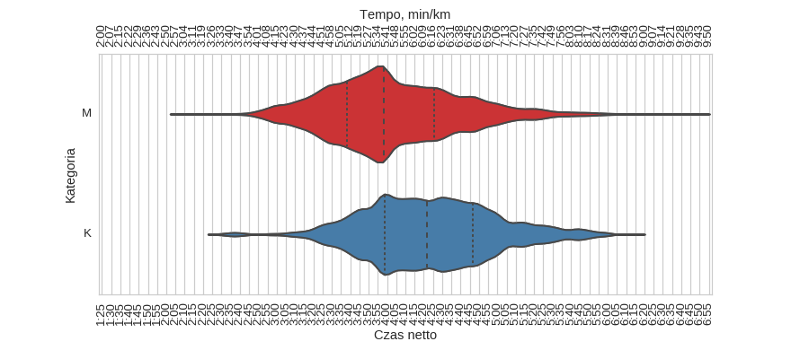

37 PZU Maraton Warszawski (2015)
Histogramy
Klasyfikacja generalna

| mean | std | min | 25% | 50% | 75% | max | |
|---|---|---|---|---|---|---|---|
| czas | 4:06:04 | 0:36:50 | 2:09:19 | 3:40:50 | 4:00:35 | 4:29:41 | 6:48:06 |
kobiety

| mean | std | min | 25% | 50% | 75% | max | |
|---|---|---|---|---|---|---|---|
| czas | 4:23:24 | 0:35:07 | 2:29:38 | 3:58:41 | 4:21:46 | 4:46:35 | 6:13:06 |
mężczyźni
| mean | std | min | 25% | 50% | 75% | max | |
|---|---|---|---|---|---|---|---|
| czas | 4:02:53 | 0:36:15 | 2:09:19 | 3:38:19 | 3:58:17 | 4:25:32 | 6:48:06 |
Wykresy rybkowe
wg płci

| czas | count | |||||||
|---|---|---|---|---|---|---|---|---|
| mean | std | min | 25% | 50% | 75% | max | ||
| plec | ||||||||
| K | 4:23:24 | 0:35:07 | 2:29:38 | 3:58:41 | 4:21:46 | 4:46:35 | 6:13:06 | 1013 |
| M | 4:02:53 | 0:36:15 | 2:09:19 | 3:38:19 | 3:58:17 | 4:25:32 | 6:48:06 | 5497 |
wg kategorii
| czas | count | |||||||
|---|---|---|---|---|---|---|---|---|
| mean | std | min | 25% | 50% | 75% | max | ||
| kat | ||||||||
| K20 | 4:18:43 | 0:37:01 | 2:35:12 | 3:55:38 | 4:15:50 | 4:44:42 | 5:46:03 | 240 |
| K30 | 4:20:28 | 0:35:01 | 2:29:38 | 3:56:42 | 4:17:03 | 4:43:11 | 6:13:06 | 449 |
| K40 | 4:29:26 | 0:32:16 | 3:15:25 | 4:07:37 | 4:28:17 | 4:48:17 | 5:59:08 | 262 |
| K50 | 4:35:00 | 0:34:04 | 3:19:31 | 4:14:10 | 4:37:37 | 4:58:12 | 5:46:41 | 43 |
| K60 | 4:39:48 | 0:31:47 | 3:43:58 | 4:24:20 | 4:34:28 | 4:59:30 | 5:41:50 | 18 |
| M20 | 4:03:03 | 0:38:12 | 2:09:19 | 3:37:52 | 3:58:17 | 4:27:23 | 6:09:33 | 879 |
| M30 | 3:59:23 | 0:35:25 | 2:14:41 | 3:35:17 | 3:55:53 | 4:22:07 | 6:44:27 | 2199 |
| M40 | 4:02:27 | 0:34:24 | 2:45:46 | 3:38:45 | 3:58:09 | 4:24:44 | 6:37:00 | 1708 |
| M50 | 4:09:24 | 0:36:56 | 2:42:03 | 3:45:12 | 4:02:44 | 4:30:48 | 6:48:06 | 541 |
| M60 | 4:29:13 | 0:38:08 | 3:12:22 | 4:02:27 | 4:22:08 | 4:53:50 | 6:37:14 | 151 |
| M70 | 4:42:05 | 0:39:10 | 3:30:56 | 4:16:17 | 4:43:37 | 5:11:31 | 5:40:51 | 19 |
wg krajów
| czas | count | |||||||
|---|---|---|---|---|---|---|---|---|
| mean | std | min | 25% | 50% | 75% | max | ||
| kraj | ||||||||
| BY | 4:08:08 | 0:30:29 | 3:21:16 | 3:49:47 | 4:08:40 | 4:20:20 | 5:13:34 | 14 |
| DE | 4:06:13 | 0:35:59 | 2:59:20 | 3:37:46 | 4:07:26 | 4:30:29 | 5:46:46 | 38 |
| DK | 4:09:08 | 0:34:40 | 3:17:57 | 3:36:06 | 4:17:20 | 4:39:05 | 4:53:44 | 12 |
| ES | 3:45:22 | 0:36:03 | 3:00:28 | 3:23:30 | 3:50:12 | 3:57:08 | 5:19:44 | 15 |
| FI | 3:59:28 | 0:37:10 | 3:05:11 | 3:31:49 | 3:57:19 | 4:18:32 | 4:57:41 | 22 |
| FR | 4:11:36 | 0:35:40 | 2:56:57 | 3:53:07 | 4:02:35 | 4:29:06 | 5:48:53 | 33 |
| GB | 4:03:28 | 0:38:53 | 2:51:36 | 3:37:57 | 3:56:47 | 4:28:54 | 5:32:52 | 71 |
| IL | 3:37:20 | 0:45:08 | 2:26:46 | 2:53:18 | 3:45:44 | 4:00:40 | 5:05:15 | 21 |
| IT | 4:13:25 | 0:37:24 | 3:02:00 | 3:46:08 | 4:06:52 | 4:38:31 | 5:21:06 | 26 |
| JP | 4:38:35 | 0:43:38 | 3:31:43 | 3:58:39 | 4:30:06 | 5:08:05 | 5:46:20 | 17 |
| NO | 3:39:48 | 0:36:12 | 2:57:48 | 3:13:27 | 3:37:48 | 3:47:10 | 4:51:48 | 11 |
| PL | 4:06:19 | 0:36:18 | 2:25:13 | 3:41:24 | 4:00:30 | 4:29:29 | 6:48:06 | 6032 |
| RU | 4:26:20 | 0:31:49 | 3:31:22 | 4:08:54 | 4:24:06 | 4:45:45 | 5:16:42 | 10 |
| SE | 3:58:28 | 0:41:52 | 2:51:08 | 3:24:11 | 4:00:20 | 4:19:20 | 5:30:00 | 30 |
| UA | 3:57:28 | 0:35:09 | 2:42:03 | 3:29:34 | 4:08:50 | 4:26:36 | 4:50:38 | 23 |
| US | 4:12:20 | 0:34:34 | 3:14:44 | 3:38:39 | 4:17:49 | 4:41:38 | 5:16:37 | 26 |
Menu
HistogramyWykresy rybkowe
∙ wg płci
∙ wg kategorii
∙ wg krajów
Dystans: 42.195 km
Liczba uczestników: 6510
Wygenerowano: 2016-03-29 20:51:44.976881